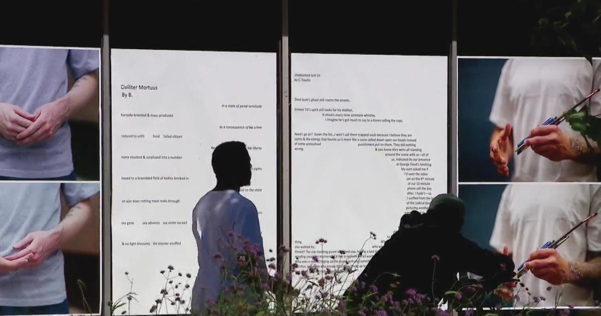

Downtown poetry, photography exhibit showcases voices of formerly incarcerated MinnesotansMINNEAPOLIS -- On the corner of 8th Street and Hennepin Avenue, a display of heartfelt poetry and photography. "I see friends. I see family. I see people who I've struggled with. All walks of life, all genders, all races. But there is a common thread. We have that experience with the criminal legal system," said Antonio Williams, a former inmate-turned author. Williams spent 14 years incarcerated in Rush City prison. "Every year spent in prison is like a chapter ripped from the best book ever written. Even after you're released, pieces of your life story are missing," said Williams, quoting from his poem about his time in prison. Other lines refer to the difficulties of life on the outside. "The colors of love are duller. The texture of affection doesn't soothe the same," read Williams. Williams is among those featured in an exhibit on the Hennepin Theatre Trust's sidewalk gallery. "There's a real strong marriage between social justice, social service agencies, and the arts. There's an expression of what needs to be shared, whether it be the thoughts, the feelings or the wants of a community," said Todd Duesing, President & CEO of Hennepin Theatre Trust. The project is a collaboration between the Minnesota Prison Writing Workshop and We Are All Criminals, with the support of several other non-profits including "The Waiting Room" podcast with Nadine Graves. "There are people that are in the system, outside of the system coming home that want to take that mic back and change that narrative and change the story that's being told about them," said Graves Graves experienced it first-hand. A difficult childhood led to a criminal record at a young age. "I ended up leaving the state of Minnesota to be in an environment where I wasn't constantly reminded of my criminal record. Went to college, did extremely well, studied sociology and criminal justice at an HBCU and came back to Minnesota where I was able to show the courts that I had rehabilitated myself through having access and resources and tools," explained Graves. "The harm that I caused, now, that is who I am. The system has told us that is who we are as people and it's not true. I'm a father. I'm someone who cares deeply about my community. I'm a homeowner," said Williams. Graves and Williams hope telling their stories will achieve change in the system and how we think about those in it. "To not be shackled by their criminal record or their past," said Graves. They're no different from our fathers, from our brothers, our sisters, our children. These are our people and I see them," said Williams. The gallery is up through Sept. 11. Graves was recently selected as a 2023 Bush Fellow. Williams just launched a book that he wrote while incarcerated called "The Dream Weaver." for more features. |
 |